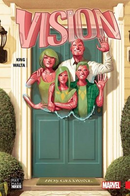

-

Avengers:Age Of Ultron
Yapay zeka Ultron, yıllardır insanlığı yok etmeye çalışıyor. Şimdiyse başarmaya hiç olmadığı kadar yakın. Hayatta kalabilen birkaç kahraman hırpalanmış, yıkılmış, yenilmiş ve artık aşırıya kaçmış çözümleri bile düşünmeye başlamışlar – ki bazıları bu çözümler arasından akla gelmemesi gerekenleri bile düşünür hale gelmiş. Fakat Wolverine Ultron’u yenmek için başına buyruk bir şekilde davranınca çözeceğinden çok daha fazla soruna mı yol açacak? Brian Michael Bendis sizlere, Avengers’ın en büyük düşmanlarından birinin nihai zaferinin dünyaları sarsacak öyküsünü sunuyor!
Yayınevi:Gerekli Şeyler
Yazar:Brian Michael BENDIS
Ebat:16x24
Kağıt:115gr Mat kuşe
Sayfa Sayısı:288
Fiyat:125 tl
-

Avengers Dağıldı
KARMAŞA!Her şey öldü sanılan takım üyesinin ölümden dönmesi ile başladı. Ve bittiğinde Avengers hakkında bildiklerinizin hepsi değişecek.Dünyanın en güçlü kahraamanları, etraflarındaki şok edici trajedi ile mücadele ederken, takım tarihinin en kötü gününü yaşıyorlar. Bunun arkasında kim ve neden var? Takımı parçalayabilecek mi? Kimler Avengers’in en büyük düşmanının elinde hayatını kaybedecek?Gelmiş geçmiş bütün Avengers tehlikede... hem de tamamı!
Yayınevi:Gerekli Şeyler
Yazar:Brian Michael BENDIS
Ebat:16x24
Kağıt:115gr Mat Kuşe
Sayfa Sayısı:164
Fiyat:85 tl
-

Gizli İstila
Skrull’lar olarak bilinen ve biçim değiştirebilen uzaylı ırk, yeryüzündeki süper-güçlü her örgütün gizlice içine sızmıştı. Amaçları tekti: Büyük çaplı bir istila! Ve artık istila başladı. Marvel Evreni karman çorman oldu. Skrull İmparatorluğu’nun planı mükemmel işledi. Kahraman, kahramana düşman oldu! Yeniden dirilenler ve yeniden birleşenler oldu! Tony Stark bir Skrull mı? Her sayfayla birlikte yeni bir gizem; her gizemle birlikte şok edici yeni bir gerçek ortaya çıkıyor! Brian Bendis ve Leinil Yu mega sükse yapan New Avengers serisinin sayfalarından fırlayıp Marvel Evreni’ni sonsuza kadar değiştirecek bir hikaye sunuyorlar! DEĞİŞİMİ BEKLEYİN!
Yayınevi:Marmara Çizgi
Yazar:Brian Michael Bendis
Ebat:16x24
Kağıt:115gr Mat Kuşe
Sayfa Sayısı:240
Fiyat:115 tl
-

Gizli Savaş
ÖRÜMCEK ADAM, WOLVERINE, CAPTAIN AMERICA, DAREDEVIL, LUKE CAGE VE BLACK WIDOW MARVEL EVRENİ’NİN EN KARANLIK DÖNEMİNDE BİR ARAYA GELİYOR.En ölümcül canilerin birbirleriyle bağlantıları olduğunu anlayan Nick Fury, hayatının en büyük kumarını oynayıp A.B.D. hükümetinden gizli, kahramanlardan ve mutantlardan oluşan bir ekip topluyor. Ya her şeyi kaybedecek ya da her şeyi kazanacak. New Avengers (Yeni İntikamcılar) ilk defa bu macerada gayriresmi olsa da bir araya geliyorlar. Marvel Evreni’nde yeni bir dönem şimdi başlıyor
Yayınevi:Gerekli Şeyler
Yazar:Brian Michael BENDIS
Ebat:16x24
Kağıt:115gr Mat Kuşe
Sayfa Sayısı:136
Fiyat:90 tl
-

Wolverine:İhtiyar Logan
50 YIL ÖNCE, WOLVERINE ÖLDÜ Onun yerinde, Logan adında ailesine iyi bir yaşam vermekten başka bir gayesi olmayan yaşlı bir adam duruyor.Hulk çetesi tarafından kenara itilen bir adam. Herşeyi göze alacağı bir karar vermeye zorlanan bir adam. Çok satan İç Savaş’ın yaratıcı takımı MARK MILLAR ve STEVE McNIVEN, delirmiş bir ülke boyunca Logan’ın son, acımasız yolculuğunun hikayesini bizlere anlatıyor!
Yayınevi:Gerekli Şeyler
Yazar:Mark Miller
Ebat:16x24
Kağıt:115gr Mat Kuşe
Sayfa Sayısı:216
Fiyat:110 tl
-

İç Savaş
Sen Kimin Tarafındasın? Marvel evreni değişiyor... Yaşanan bir trajedinin ardından amerikan hükümeti, her kostümlü kahramanın maskelerini çıkararak kendilerini devlete tanıtmalarını şart koşan bir 'süper kahraman kayıt yasası' tasarısı sunar. ulusun şampiyonlarının her birinin, hayatlarını sonsuza dek değiştirecek bireysel kararlar almaları gerekmektedir. bunu yaparken de çevrelerinde güvenebilecekleri hiç kimse bulunmamaktadır... Kendilerinden başka!
Yayınevi:Marmara Çizgi
Yazar:Mark Miller
Ebat:16x24
Kağıt:115 gr Mat Kuşe
Sayfa Sayısı:208
Fiyat:100 tl
-

Kaptan Amerika:Kış Askeri
AMERİKA’DA YILIN ÇİZGİ ROMANI SEÇİLEN, STATÜKOLARI YIKAN EFSANE! Elli yıldan uzun bir süredir Sovyetler’in, Batı’nın önemli politik figürlerini öldürmek için gizli bir ajanı vardı ve bu kişi durdurulamıyordu,bulunamıyordu ve Kış Askeri adıyla biliniyordu.Peki Kış Askeri olduğundan şüphelenilen kişi kimdi? Captain America’nın bir zamanlar ortağı olan ve II. Dünya Savaşı’nın son gününde öldürüldüğü düşünülen Bucky Barnes. Kış Askeri artık geri döndü ve acımasız General Lukin’in emrinde çalışıyor ve Lukin, sınırsız güce sahip, gerçekliği bükebilen Kozmik Küplerden çalışan bir tanesini ele geçirdi. Lukin’in terör ve yıkım hükümdarlığını yıkmak isteyen Captain America, durmak bilmeden Küp’ün izini sürecek ancak bu yüzden Kış Askeri’yle yüz yüze gelecek.Yoksa Cap, şaşırtıcı gerçeği öğrenmesinden kısa bir süre sonra, ölümden hayata geri döndürülen ortağıyla savaşmak zorunda mı kalacak? Beş kez Eisner Ödülü’ne aday olan Ed Brubaker, peş peşe sayfalarda açığa çıkardığı şok edici olaylarla yarattığı heyecan ve beklentiyle hem eleştirmenlerin hem de okurların başını döndürüyor. Ain’t It Cool News, bu hikâyeye “yazılmış en büyük ve en iyi Captain America hikâyelerinden biri” diyor.
Yayınevi:
Marmara ÇizgiYazar:Ed Brubaker
Ebat:16x24
Kağıt:
115 gr Mat KuşeSayfa Sayısı:
240Fiyat:
110 tl -

Secret Wars
Çokluevren çöktü. Geriye sadece iki boyut kaldı. Şimdi de Marvel Evreni ve Ultimate Evreni çarpışacak. İki dünyanın kahramanları da gezegenlerini kurtarmak için savaşacak ve başarısız olacaklar. Ama hiçliğin ortasından, kayıp dünyaların kalıntılarını yamayarak yapılmış inanılmaz bir gezegen ortaya çıkacak. Boyutlar tanıdığınız kişilerle ama farklı şekilleriyle dolu olacak. Bu gezegende sınırlar koyu çizgilerle çekilmiş halde, kanun ve düzeni Thorlar ordusu sağlıyor, günahkârlar ise Kalkan’ın arkasındaki kâbuslarla dolu çukura atılıyor. Bu Battleworld gezegeni sürekli iç karmaşa halinde ve daha önce bilinen bütün her şey mitler ve efsanelere dönüşmüş durumda. Her şeyi birarada tutan şey ise bir ad amın çelik iradesi ve öteden gelen gücü onu tanrı yapmış durumda. Tek kurtuluş yolu Doom’ken… insanlığın ne gibi bir umudu olabilir?
Yayınevi:
Gerekli ŞeylerYazar:
Jonathan HickmanEbat:
16x24Kağıt:
115 gr Mat KuşeSayfa Sayısı:
308Fiyat:
150 tl -

Spider-Geddon
Varisler, hapsoldukları radyoaktif gezegenden kaçıp Marvel Evreni’ne geri döndüler. Kötüler ilk kanlarını dökerken onlara engel olmak için koca bir örümcek ordusunun kurulması gerekecek! Başrollerde Örümcek Adam, Otto Octavius, Spider-Gwen, Miles Morales, Örümcek Kadın, Örümcek Punk, Japon televizyonundaki Örümcek Adam, konsol oyunundaki Örümcek Adam ve bir sürü Örümcek var-- hatta yepyenileri de var! Vahşi Batı’nın Örümcek’i Ağ Üstadı’yla tanışmaya hazırlanın! May Parker: Örümcek Madam! Ve daha fazlası! Karşılaştıkları tehdit büyürken, “Ağ Kafa”larımız ve “Duvar Sürüngenleri”miz için işler hiç de parlak görünmeyecek. Örümcek Evreni’nin sonu karşınızda!
Yayınevi:
Marmara ÇizgiYazar:
Dan Slott, Christos GageEbat:
16x24Kağıt:
115 gr Mat KuşeSayfa Sayısı:
144Fiyat:
95 tl -

Vision
VISION insan olmak istiyor; peki bir aile kurmak, insana özgü en temel eylemlerden biri değildir de nedir? Vision da bu yüzden her şeyin başladığı yere, Ultron’un kendisini yarattığı laboratuvara dönüyor. Kaderine ilk kez baş kaldırdığı, bir insan olabileceğini hayal ettiği o yerde ailesini kuruyor. Bir eş, Virginia. Lise çağındaki ikizler, Viv ile Vin. Hepsi Vision’a benziyor. Hepsi onun güçlerine sahip ve en büyük dileğini paylaşıyor: Sıradan olmanın önlenemez arzusu. Onlar artık komşumuz ve hepimizi öldürebilecek güce sahipler. Ne sorun çıkabilir ki? Her ailedeki gibi Vision ailesinde de sırlar var ama onlarınki ölümcül ve bu yüzden de mutlu aile tabloları dağılmakta. Yalanlar, yalanları izleyecek; ceset, ceset üstüne yığılacak. Trajedi kapıda ve bu trajedi, gerçekleştiği takdirde android Avenger ile Dünya’nın En Kudretli Kahramanları arasında yıkıcı bir yüzleşmeye yol açacak, Vision bir daha eskisi gibi olamayacak. Tom King’in yazdığı, Gabriel Hernandez Walta, Michael Walsh & Jordıe Bellaire’in resimlediği, Eisner ödüllü Vision (2015) #1-12 serisi bütünüyle ilk kez bu ciltte toplanıyor.
Yayınevi:
Marmara ÇizgiYazar:
Tom KingEbat:
16x24Kağıt:
115 gr Mat KuşeSayfa Sayısı:
240Fiyat:
120 tl